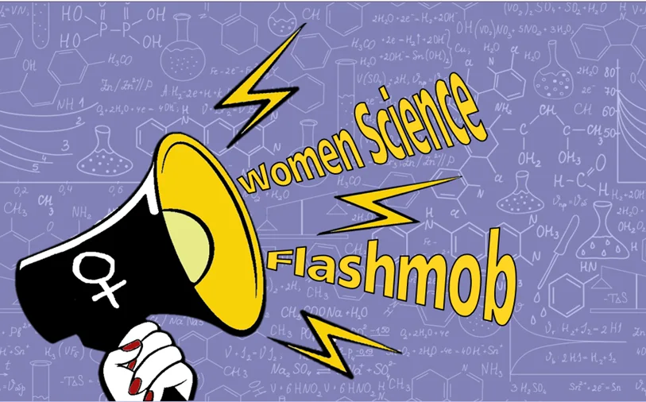
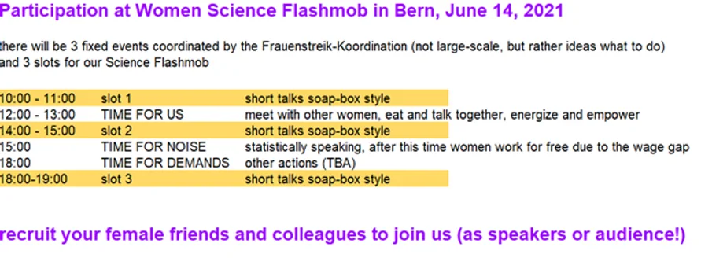

From the event archive
Frauenstreik 2021
Bern, Switzerland
500 WS Bern-Fribourg @ Frauenstreik 2021, June 14
Join us!
We, 500 Women Scientists Bern-Fribourg, are planning join this year’s Frauenstreik on June 14, which will be quite different because no large demonstrations are possible (instead, they planned many different actions all over town).
Let’s do a series of short science talks (2-3 minutes), using a few items or dress up a little (lab coat, construction helmet, etc.) to increase the visibility of women scientists and normalize women experts (check out soapboxscience and “my thesis in 180 seconds” here or here for inspiration).

We meet at three different time slots at three different locations (one of them for sure in front of the main university, the others TBD)
Talks should use simple terms for a general and diverse audience and give clear, concise, compelling explanation of your research
Take 2-3 larger paper sheets (A3) with succinct information, ideally a graphic, which can be shown along with your talk (check out this video).
Seize this is great opportunity to reach even not so science-savvy audiences and pitch our research to the public!
The vision is that many of us take part and that we “recruit” friends and colleagues as well. For every one of us, this is not a big effort but if we are a bunch of people, we can make a real show. Each of us can talk three times (or more), but if you have only time for one slot you are also very welcome!
Please join us (register here)!
Men are of course welcome as audience but they are expected to keep in the background.
*Covid-19 regulations will be respected.

This page records the event as announced at the time. Contact the pod for current activities.